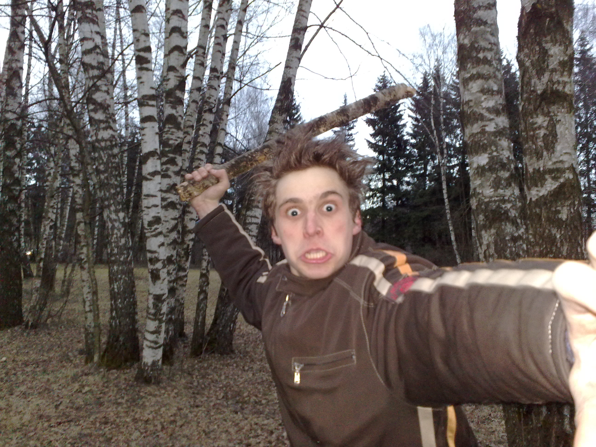
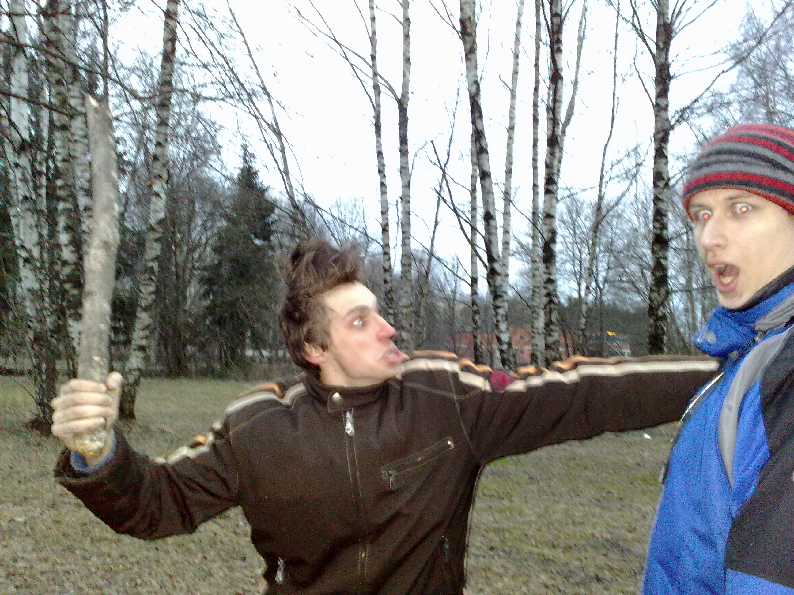
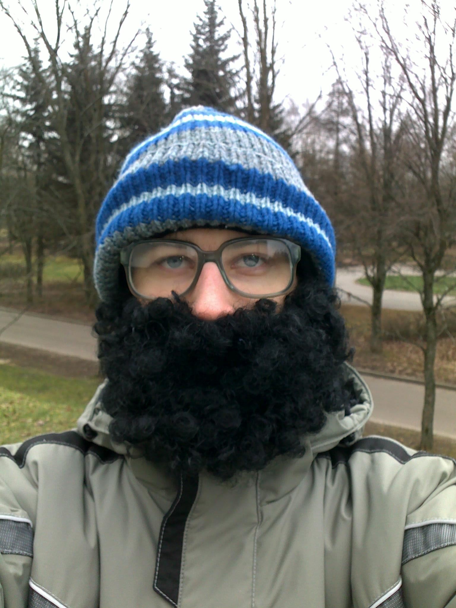

<h2 class="page-title">Фоты</h2>

<div class="post post-photos">        
    <div class="post-content">
        <h3 class="post-title">Часть 3</h3>
        
        
                
    </div> 
</div>

<ul class="page-selector">
    <li><a class="page-selector-item" href="photos-2.html"><</a></li>
    <li><a class="page-selector-item" href="photos.html">1</a></li>
    <li><a class="page-selector-item" href="photos-2.html">2</a></li>
    <li class="page-selector-item page-selector-item-active">3</li>
    <li class="page-selector-item page-selector-item-disabled">></li>
</ul>

<script> //Selecting of active item in sidebar
    let element = document.getElementById("sidebarPhotos");
    element.classList.add("active")
</script>